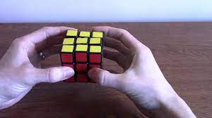

So you want to solve that mixed up Rubik's Cube that's been sitting at home all these years? Or you just think messing around with a Rubik's Cube looks like fun. This site will teach you the easiest way to solve a cube and some other more advanced ways if you want to get more serious with cubing as a hobby. As well as providing a link to get some pretty rad cubes. Let's first establish some basic terminology before getting started:

1. Orientation
When holding a cube, hold it as seen in the picture. With one face of the cube towards you and a hand on either side.
2. Pieces
There are three types of pieces:
-
Centers - these remain fixed and serve as a guideline to solve the puzzle. On a solved cube, all the pieces of a particular color surround the centre of that color. On a scrambled cube, the centre represents the side on which the pieces of a particular color are supposed to be.
-
Corners - As the name suggests, the corner pieces are located on the corners of the cube. Each piece is made up of three different colors. There are 8 corners on any cube shape, and thus there are 8 corners on the Rubik's cube.
-
Edges - The edges are the pieces between two corners. They are made up of two colors. There are 12 edges on the Rubik's cube.
3. Notation
The [] will notate the movement of the layer from the natural holding position for a better understanding:
- R - Right side clockwise [Right side upwards]
- R’ - Right side counter-clockwise [Right side downwards]
- L - Left side clockwise [Left side downwards]
- L’ - Left side counter-clockwise [Left side upwards] (Note: L and R may be confusing at first since the moves are opposite to each other)
- F - Front side clockwise
- F’ - Front side counter-clockwise
- B - Back side clockwise
- B’ - Back side counter-clockwise
- U - Upper side clockwise
- U’ - Upper side counter-clockwise
- D - Downward/Bottom/Lower side clockwise
- D’ - Downward/Bottom/Lower side counter-clockwise
- Any letter followed by a 2 (U2, L2, etc.) means to turn that side twice. Thus direction does not matter as either way twice will result in the same move